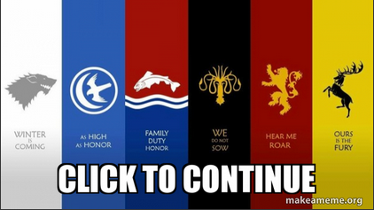
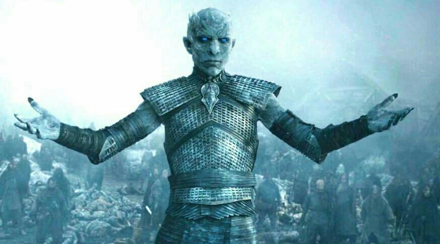

<html>
  <body>

    <center>
      <div id="game_area">
      
      </div>
    </center>

    <script>

//text prompts
var intro;
intro = 'You slowly awake on the continent of Westeros. Westeros is a continent located in the far west of the known world. It is separated from the continent of Essos by a strip of water known as the Narrow Sea. The seven kingdoms of Westeros are at war with each other. Only one thing is for certain "When you play the game of thrones, you either win or you die" '

var play;
play = "By choosing to play the Game of Thrones you hereby consent to the fact that you either will rule the continent or die horrifically in the pursuit of your goal. I wish you good fortune in the wars to come."

var noplay;
noplay = "Not choosing to play the game of thrones seemed like a good idea right? Wrong. You have no allies to turn to and are overtaken with ease by the hordes of the undead. Soon you will rise again and join the growing ranks of the Night King's army."

var user_quit;
user_quit = false;

//Begin Program
function start_game() {

  alert("Welcome to Westeros Simulator");
  var user_play;
  user_play = confirm("Do you want to play?");

  document.getElementById("game_area").innerHTML='';

}

function part_one(){

  alert(intro)
  choice = confirm("Do you want to play the Game of Thrones?");

  if  (choice==true) {
    alert(play);
  }
  else {
    alert(noplay);
  document.getElementById("game_area").innerHTML='';
  }
  alert("And now your watch has ended");
}

function ending() {
  document.getElementById("game_area").innerHTML='';
  }


      </script>
      </body>
  </html>
